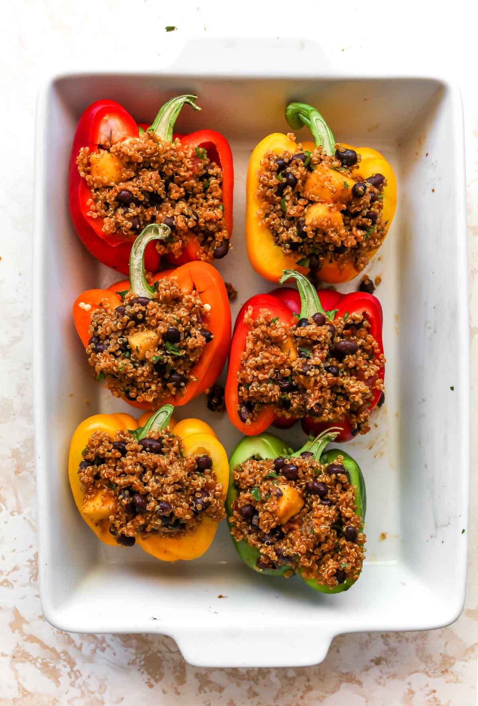

Stuffed Peppers

These melt-in-mouth roasted peppers are a great and easy way to make a dish that tantalizes the senses. Here's the list of the ingredients needed for the dish.
Ingredients
- Bell Peppers
- Lentils
- Italian Seasoning
- Canned and Sundried Tomatoes
- Onions
- Nutritional Yeast
Next, here are the steps needed to make our stuffed peppers
- Sauté the onion, then add the garlic and seasonings.
- Add the lentils, quinoa, and both tomatoes. Bring to a boil, then simmer for 25 to 28 minutes, stirring occasionally.
- While the filling cooks, arrange the bell peppers cut side up in a baking dish with a little water in the bottom. Bake at 400 degrees F for 20 minutes.